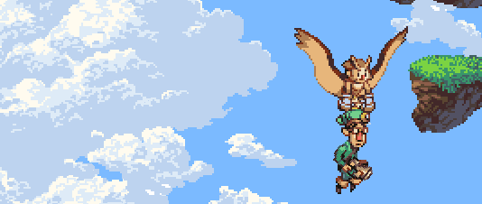
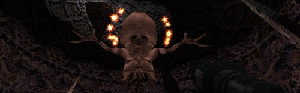

Si vous résidez en France et que vous travaillez sur un jeu, vous serez peut-être intéressé d'apprendre l'existence du FLIP, le Festival Ludique International de Parthenay, un concours de création de jeu vidéo ouvert à tous.
Les inscriptions sont ouvertes jusqu'au 5 mai et peuvent se faire seul ou en équipe. Les seules contraintes sont de fournir une vidéo de gameplay de quelques minutes et d'être en mesure de fournir un prototype jouable sur au moins un niveau pour le festival, qui se déroule du 11 au 13 juillet.
Pour les intéressés, vous trouverez plus de détails sur le site officiel.
Lire la suite
ou
le commentaire
Aucun tutoriel sur le pixel art, qui plus est dans le cadre de la création d'un jeu vidéo, ne saurait faire l'impasse sur l'animation, c'est pourquoi nous vous proposons aujourd'hui un article sur le sujet.
Commençons par une rapide explication du principe d'animation tel que nous l'envisagerons ici.
Si vous avez déjà vu une bobine de film, vous n'êtes pas sans savoir qu'elle est composée d'une série d'images fixes affichées très rapidement les unes à la suite des autres (24 images/secondes en général). L'animation en pixel art repose sur ce même principe : l'affichage d'une succession de cadres ou frames, bien que le nombre d'images uniques par seconde soit généralement très inférieur à celui de l'animation classique, résolution oblige.
Je ne parlerai pas de la gestion des frames au sein d'un logiciel ni de leur organisation au sein d'un fichier, puisque cela dépend de la façon dont votre image est lue mais sachez que dans la très grande majorité des cas, les frames sont toutes regroupées en une seule image appelée spritesheet.

Lire la suite
ou
les 6 commentaires
GraphicsGale est un outil très puissant pour quiconque s'intéresse au pixel art, et propose une version d'essai gratuite qui reprend la majorité des fonctionnalités de la version complète (sauf les formats comme .gif, .cur, .ani et . ico qui ne sont pas supportés) téléchargeable ici.
GraphicsGale permet notamment l'utilisation de plusieurs frames pouvant elles-mêmes contenir plusieurs calques et gère la transparence. C'est également un outil de gestion des palettes restreintes très puissant, mais trêve de bavardage, entrons dans le vif du sujet.
Lire la suite
ou
les 10 commentaires
Dans le dur monde du jeu vidéo, tous les titres ne sont pas égaux. Certains deviennent des succès planétaires et d'autre finissent rapidement aux oubliettes. Une différence entre ces deux catégories, c'est ce que j'appellerai l'identité.

Lire la suite

Il y a quelque chose d'amusant avec les jeux vidéos : y jouer provoque couramment l'envie d'en faire un soi-même. C'est exactement ce que j'ai ressenti en jouant à mon premier jeu sur ordinateur. Après cinq minutes passées dessus, je me suis dit : « Il FAUT que je sache comment on fait ça ! ». Je ne connais aucun média qui provoque cette sensation aussi fortement. Enfant, je regardais la télévision sans vouloir faire des émissions télévisées. J'ai bien eu envie d'écrire après avoir lu des livres, mais les enfants sont toujours encouragés à écrire. Personne ne m'a encouragé à faire des jeux vidéos. C'était simplement quelque chose que je savais devoir faire.
Lire la suite
ou
les 3 commentaires
La raison pour laquelle les fins de jeu craignent (pour la plupart, naturellement) a déjà été traitée, mais je voulais en parler dans une perspective spécifiquement narrative.
Donc. Les fins de jeux craignent parce qu'elles sont le dernier élément développé, qu'il n'y a plus de budget, que tout le monde est crevé et parce que la plupart des joueurs ne les regardent jamais de toute façon. Il y a deux choses qui me frappent particulièrement : pourquoi les joueurs ne regardent-ils jamais la fin, et pourquoi personne ne parle-t-il de l'histoire ?

Lire la suite
ou
les 8 commentaires
Certains, en lisant ce titre quelque peu opaque, ont pu se demander « Mais de quoi il parle cet article ? ». Avant de m'étendre sur le sujet, je commencerai donc par clarifier ce point. Les DLCs, ou downloadable contents dans la langue de Shakespeare, sont des contenus additionnels téléchargeables pour un jeu qui reprennent le principe de l'extension, à la différence près que l'absence de support physique fait que ces contenus peuvent être gratuits (ou pas) et sont généralement téléchargeables depuis le jeu ou un support fourni avec (Steam, Xbox Live, PSN, etc.).

Derrière le terme barbare d'achats par micro-paiement, se cache l'acquisition de contenu utilisable dans le jeu, comme de l'or, des objets ou un déguisement de bisounours pour votre barbare, bref tout ce qui peut passer par la tête des responsables du projet, par le truchement d'une transaction réelle (comprenez « en balançant l'oseille »).
Lire la suite
ou
les 3 commentaires